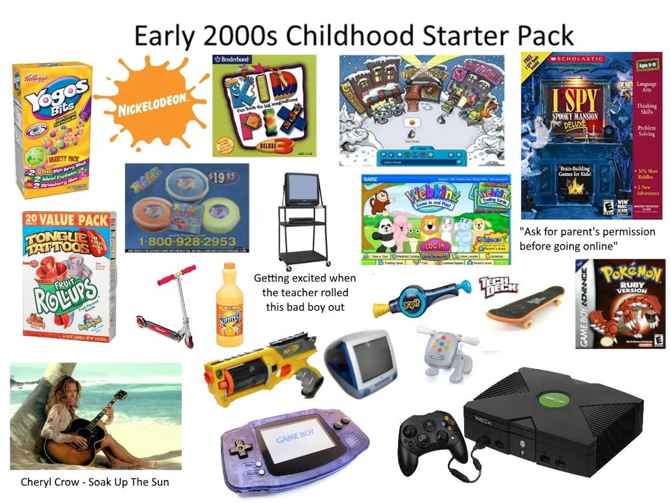
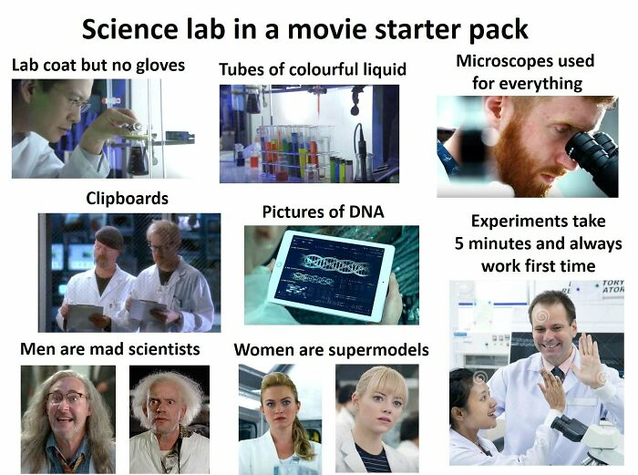

Starter Pack of You
Objectives
- Examine your own history with art and design, and reflect on your sensibilities and tastes.
- Get to know your classmates while exploring a shared workspace.
Meet FigJam
You can create two types of files in Figma: a Figma Design file or a FigJam file.
FigJam is a simpler app, geared for brainstorming and collaboration. Most of our exercises in this class will use the more robust Figma Design files, but we will occasionally use FigJam for discussions and quick activities.
Let’s make some memes
The Starter Pack meme originated in 2015 and used images of objects, clothing, and ephemera to create a visual portrait of someone. The idea that an entire type of person can be defined by objects is implicitly consumerist, and labeling it as a “pack” or “kit” underlines the premise that identities can be purchased at a store. I’d like to think that our identities are deeper than that, but perhaps there’s some truth to the way our objects and stories shape our interior selves. Browse more starter pack memes in Reddit’s starterpacks community.

Via Reddit
Instructions
Create a “starter pack” image collage that illustrates your personal creative evolution.
Include images of artwork, designs, media, products, clothing, or popular culture that have shaped your creative identity and tastes. Consider your essential canon; your desert island picks; the ingredients that combine to create your aesthetic or artistic sensibilities.
Include at least one thing that you are embarrassed by or no longer like, but helped shape your experience of art and culture, or a guilty pleasure that is nonetheless essential.
Each student should arrange their images in a section of the FigJam file (sections are just rectangles used for organization).
Claim an empty section by double-clicking a section's text label and entering your full name! You can change the background color of the section if desired.
When finished, select “File » Save to Version History” to ensure your work is saved. You will be prompted to enter a title — type “Finished” — you don’t need to enter your name here because the Version History will automatically associate this action with your account.
(This is a safeguard in case someone accidentally deletes your work in the shared file, which can be recovered according to prior instructions. See “What to do if something gets deleted” in the “Etiquette for Shared Files” page).
FigJam Exploration
You should also use this opportunity to experiment in FigJam a bit.
There is a large area of the file labeled “Free Doodle Zone” — feel free to draw with the Pencil tool, add stamps (E), text (T), shapes, or Stickers (under the More button).
I’ve also created a “Podcast Response” section where you can respond to this lesson’s podcast. Post some Sticky Notes (S) to let me know what you thought.
Requirements
- Arrange 6-12 images in a Section of the FigJam file.
- Respond to at least one of the questions in the “Podcast Response”
- Add something to the “Free Doodle Zone”

Via Bored Panda
Submission
When you’ve finished your contributions to the shared file and created your Starter Pack, select “File » Save to Version History” to ensure your work is saved.
You will be prompted to enter a description, so just write “Finished!” or whatever message you like. This action is automatically associated with your username so you don’t need to write your name.